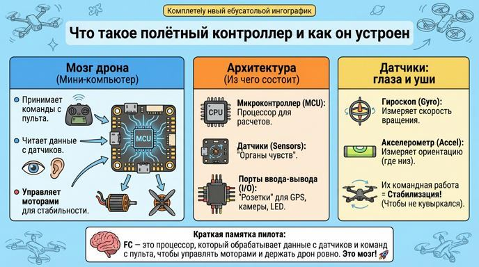
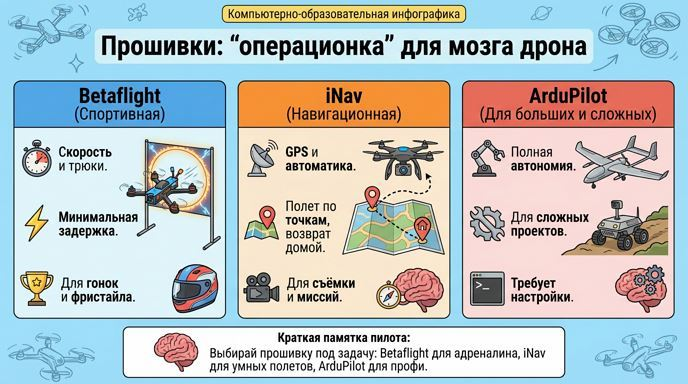

Полетный контроллер: мозг дрона, который всё чувствует и решает
Привет, юный пилот! Мы уже разобрали моторы, пропеллеры и регуляторы — это как мышцы и нервы дрона. А сегодня доберёмся до самого главного: полётного контроллера (FC — Flight Controller). Это настоящий "мозг" твоего дрона! Он принимает команды с пульта, читает данные с датчиков и решает, как распределить мощность на моторы, чтобы дрон летел ровно и послушно. Без него дрон — просто набор деталей. Давай разберёмся, как он устроен, что чувствует и на каком "языке" работает. Готов? Взлетаем в мир электроники!
Что такое полётный контроллер и как он устроен?
Представь полётный контроллер как мини-компьютер в твоём дроне — размером с кредитку, но суперумный. Его архитектура (структура) включает:
✔ Микроконтроллер (MCU): Это "процессор мозга" — чип, который обрабатывает все расчёты. Он берёт сигналы от пульта, датчиков и отдаёт команды на ESC (регуляторы оборотов).
✔ Датчики: "Органы чувств" дрона. Они помогают понимать, где дрон находится и как движется.
✔ Порты ввода-вывода: "Розетки" для подключения всего остального — приёмника сигнала, GPS, камеры, LED-света и даже барометра (для высоты).
Без FC дрон не сможет стабилизироваться: он будет кувыркаться, как мячик. FC непрерывно (тысячи раз в секунду!) проверяет данные и корректирует полёт.
Датчики — это то, что делает дрон "живым". Вот главные:
✔ Гироскоп: Измеряет угловую скорость — как быстро дрон вращается вокруг осей (крен — наклон вбок, тангаж — нос вверх/вниз, рыскание — поворот вокруг вертикали). Он супербыстрый и помогает мгновенно стабилизировать дрон, но со временем может "сбиться" (дрейфовать).
✔ Акселерометр: Измеряет линейное ускорение, включая гравитацию. Он понимает, где "низ" (земля), и помогает дрону висеть ровно или возвращаться в горизонт. Медленнее гироскопа, но даёт точную ориентацию.
Их командная работа: FC сочетает данные от обоих (с помощью специальных алгоритмов, как фильтр Калмана), чтобы дрон не падал. Гироскоп даёт скорость изменений, акселерометр — абсолютное положение. Ещё бывают барометр (для высоты) и магнитометр (компас для направления).

Прошивки: "операционка" для мозга дрона
Полётный контроллер — это железо, но чтобы он работал, нужна прошивка (firmware) — как ОС на смартфоне. Вот две популярные:
✔ Betaflight: "Спортивная" прошивка для скорости и трюков. Она делает дрон манёвренным, с минимальной задержкой. Идеальна для гонок (дрон-рейсинг) и фристайла. В ней крутые настройки для стабилизации (PID-регуляторы — они как ручки громкости для корректировки полёта).
✔ iNav: "Навигационная" прошивка для умных полётов. Поддерживает GPS, чтобы дрон летал по точкам, удерживал позицию или возвращался домой автоматически. Подходит для съёмки, мониторинга или дальних миссий.
Выбор прошивки зависит от задачи: для адреналина — Betaflight, для автоматики — iNav. Есть и другие, как ArduPilot для больших дронов.

Краткая памятка от бывалого пилота:
✔ FC — мозг дрона: обрабатывает команды и датчики, управляет моторами.✔ Датчики: Гироскоп для скорости вращения, акселерометр для ориентации — вместе они стабилизируют.
✔ Прошивки: Betaflight для гонок и скорости, iNav для GPS и миссий.
✔ Золотое правило: Выбирай FC под задачу и всегда калибруй датчики перед полётом!
Удачи на занятиях! Скоро мы настроим прошивку и увидим, как дрон оживает. Лети умно и стабильно!
Навигация по образовательному курсу
Урок 1. Мир дронов: история, виды и правила безопасности
Урок 2. Рама. Варианты исполнения.
Урок 3. Моторы, электродвигатели.
Урок 4. Пропеллеры.
Урок 5. Регулятор оборотов.
Урок 6. Контроллер полета (автопилот).
Урок 7. Приемник-передатчик (ПДУ).
Урок 8. Аккумуляторная батарея (АКБ). Виды и маркировка.
Урок 9. Вспомогательное оборудование.
Для перехода к следующему учебному материалу используйте кнопку «Вперед» в верхней навигации.